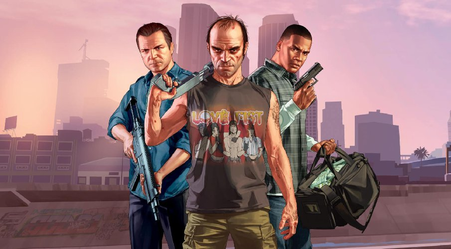
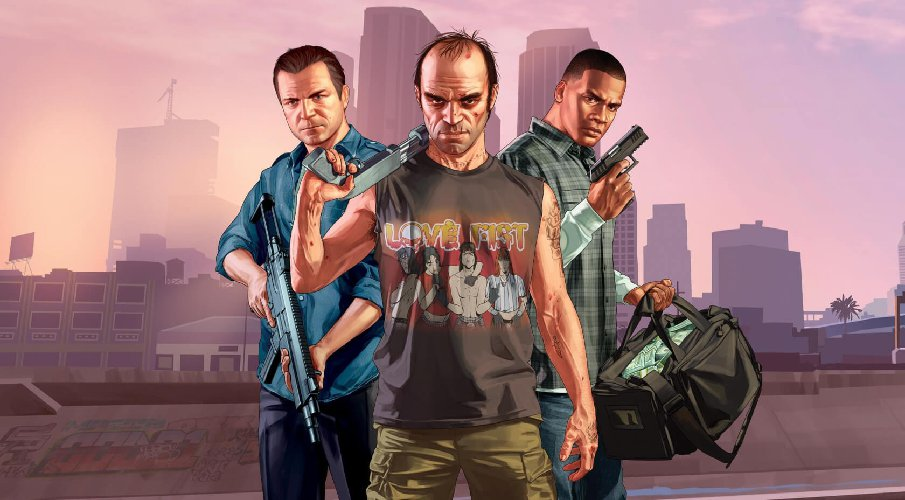
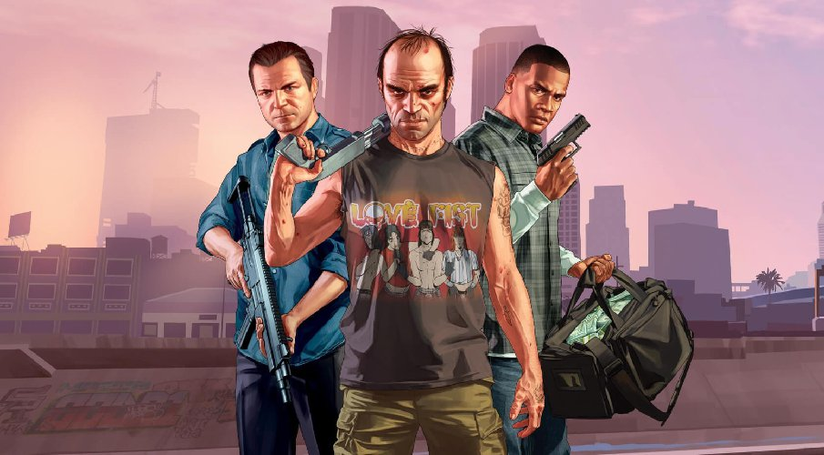

Grand Theft Auto V is a 2013 action-adventure game developed by Rockstar North and published by Rockstar Games. It is the seventh main entry in the Grand Theft Auto series, following 2008's Grand Theft Auto IV, and the fifteenth instalment overall. Set within the fictional state of San Andreas, based on Southern California, the single-player story follows three protagonists—retired bank robber Michael De Santa, street gangster Franklin Clinton, and drug dealer and gunrunner Trevor Philips—and their attempts to commit heists while under pressure from a corrupt government agency and powerful criminals. The open world design lets players freely roam San Andreas' open countryside and the fictional city of Los Santos, based on Los Angeles. The game is played from either a third-person or first-person perspective, and its world is navigated on foot and by vehicle. Players control the three lead protagonists throughout single-player and switch among them, both during and outside missions. The story is centred on the heist sequences, and many missions involve shooting and driving gameplay. A "wanted" system governs the aggression of law enforcement response to players who commit crimes. Grand Theft Auto Online, the game's online multiplayer mode, lets up to 30 players engage in a variety of different cooperative and competitive game modes. The game's development began around the time of Grand Theft Auto IV's release and was shared between many of Rockstar's studios worldwide. The development team drew influence from many of their previous projects such as Red Dead Redemption and Max Payne 3 and designed the game around three lead protagonists to innovate on the core structure of its predecessors. Much of the development work constituted the open world's creation, and several team members conducted field research around California to capture footage for the design team. The game's soundtrack features an original score composed by a team of producers who collaborated over several years. Grand Theft Auto V was released in September 2013 for the PlayStation 3 and Xbox 360, in November 2014 for the PlayStation 4 and Xbox One, in April 2015 for Windows, and in March 2022 for the PlayStation 5 and Xbox Series X/S.

| aoto | color | hp |
| ferrari | blue | 960 |
| niva | white | 80 |
| 06 | blue | 90 |
| porsh | black | 670 |
| range rover | black | 500 |
| limuzin | white | 180 |
| merseders | blue | 585 |
| lamborgini | Red | 910 |